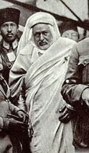

Þeyh Ahmed Eþ-Þerif Es-Sünûsî (1873- 1933)

Afrika'da doðup geliþen ve büyük hizmetler ifa eden Sünûsi hareketinin büyüklerindendir. Trablusgarp iþgali sýrasýnda Ýtalyanlara karþý verdiði büyük mücadele ve kahramanlýðý ile tarihe geçmiþ din alimi ve büyük liderlerdendir. Senusi tarikatýnýn ve buradaki halkýn baþýnda büyük mücadele vermiþ ve uzun süre düþmanýn ülkeyi ele geçirmesine engel olmuþtur. Osmanlý Devleti Ýtalya ile barýþ yapmak zorunda kalýp buradan çekildikten sonra da mücadelesini sürdürerek iþgale direnmiþ, Osmanlý Devleti de el altýndan desteðini mümkün mertebe sürdürmüþtür. Birinci Dünya Savaþý sýrasýnda Osmanlý ile baðýný en güçlü þekilde devam ettirmiþ, savaþýn sonlarýna doðru bizzat Padiþah tarafýndan Ýstanbul'a davet edilmiþ ve kendisine büyük bir alâka gösterilmiþtir. Kurtuluþ Savaþý sýrasýnda Anadolu'nun bir çok yerini gezerek Kuva-yý Milliyecilere destek olmuþ ve onlar için vaizlik yapmýþtýr. Risâle-i Nur'da, vaizlik yapmýþ olmasý ve bilâhare Kürtçe bilmediðinden dolayý Þark Vilayetlerinin umum vaizliðinin Bediüzzaman'a teklif edilmesi münasebetiyle ismi zikredilmektedir. Savaþýn bitiminden ve ülkemizden ayrýldýktan sonra kendisinden boþalan vaizlik makamý Bediüzzaman'a teklif edildiyse de kabul edilmedi.(Þualar s. 314; Burhan Bozgeyik, Bediüzzaman Said Nursi Hayatý-Davasý-Eseri, Ýstanbul 1995, s. 150; Abdulkadir Badýllý, Bediüzzaman Said-i Nursi Mufassal Tarihçe-i Hayatý, 1. C. Ýstanbul 1998, s. 577)
Ahmed, 1873 yýlýnda Jagbub'da dünyaya geldi. Senüsilerin önderlerinden olan Muhammed Þerif'in oðludur. Muhammed Þerif'in onun dýþýnda dört erkek çocuðu daha vardý. 1902 yýlýnda Muhammed Mehdi'nin vefatý üzerine Senusilerin baþýna geçti. Senusiler, Afrika'da önemli bir nüfuza sahip idiler. Özellikle Sahra ve Sudan bölgesinde geniþ bir etki alanýna sahiptiler. Yaklaþýk bir asýrdan beri devam edegelen sömürgecilik hareketleri ve özellikle Ýslâm topraklarýný ele geçirip sömürgeleþtirme teþebbüslerinin hýz kazandýðý bir dönemde Afrika'daki bu güzide topluluðun baþýna geçti. Senusiler, Ýtalya'nýn Trablusgarp'ý iþgaline kadar, tamamen dinî hizmetlerle iþtigal etmekte ve her hangi bir askerî harekâtýn içinde yer almamýþlardý. Ancak, özellikle 1900'leri baþýndan itibaren Ýtalya'nýn açýk bir þekilde Trablusgarp'a göz dikmesi ve burayý iþgal için fýrsat kollamasý Osmanlý hükümetini telâþlandýrmaktaydý.
Osmanlý Devletine samîmî bir þekilde baðlý bulunan Senusiler, iþgal giriþimlerine karþý silâhlandýrýlmaya baþlandýlar. Devlet, herhangi bir saldýrý durumunda buraya zamanýnda askerî yardýmý ulaþtýramayacaðýný hesap ettiðinden, özellikle devlete son derece baðlý bulunan ve bu baðlýlýklarý Þeyh Ahmed zamanýnda adeta zirveye çýkan yerli halký iþgaller karþýsýnda harekete geçirdi. Senusiler, önce Orta Afrika'yý iþgal eden Fransýzlarla büyük bir mücadeleye giriþtiler. Büyük kahramanlýklar gösterdiler.
Þeyh Ahmed, 1911 Trablusgarp iþgali üzerine, Ýtalyanlara karþý büyük bir mücadeleye giriþti. Enver Paþa ile yaptýðý görüþmeden sonra Türk ve Arap subaylarýn komutasýnda teþkil ettikleri kuvvetlerle direniþe geçtiler. Enver Paþa, hükümetin içinde bulunduðu þartlarý gereði Ýtalyanlarla barýþ antlaþmasý yapmaya mecbur kalýndýðýný Senusi'ye izah ettikten sonra, yinede cihada devam etmeleri tavsiyesinde bulundu. Ayrýca, bu mücahitlerin elinde bulunan bölgelere yazýlan resmî yazýlarda "Senusi Hükümeti" baþlýðý taþýyan kâðýtlarýn kullanýlmasý da dikkate deðerdir. (Celal Tevfik Karasapan, LÝBYA Trablusgarp, Bingazi ve Fizan, Ankara 1960, s. 218)
Trablusgarp savaþýnda beklendiði üzere, Osmanlý Devleti buraya askerî güç sevk edecek durumda deðildi. Bir yýl geçmeden Balkan Savaþý'nýn baþlamasý devleti daha zor durumda býraktý. Bu geliþmeler üzerine iþgalci Ýtalya'ya karþý halk kendi savaþýný vermek zorunda kaldý. Uzun bir süre Ýtalyanlar kýyýda sýkýþýp kaldýlar ve ülkenin içlerine doðru ilerleyemediler. Osmanlý Devleti Ýtalya ile barýþ antlaþmasýný (Uþi) imzaladýktan sonra da buradaki Senusilerin mücadelesi ve savaþý devam etti.
Þeyh Ahmed, Birinci Dünya Savaþý sýrasýnda kendine baðlý birliklerle Ýngiliz kuvvetlerine karþý savaþtý. Bu arada Padiþah tarafýndan 1915 yýlýnda Trablusgarp valisi ilân edildi. Ancak, Ýngilizlere karþý yaptýðý savaþta, Sollum'da yenilgiye uðrayýnca çekilmek zorunda kaldý. Diðer taraftan Cemal Paþa komutasýndaki Osmanlý ordusunun da Ýngiliz kuvvetlerine karþý yenilmesi Senusilerin mukavemetini daha da zayýflattý.
Birinci Dünya Savaþý'nýn sonlarýna doðru Sultan Reþat tarafýndan Ýstanbul'a davet edildi. Þeyh Ahmed bu davete uyup 1918 yýlý baþýnda Ýstanbul'a geldi. Ýstanbul'a geliþinde Haydarpaþa'da, aralarýnda Enver ve Cemal Paþalarýn da bulunduðu bir topluluk tarafýndan karþýlandý. (BOA. YEE. 86/41) Ýslâm dünyasýnda önemli bir etkiye sahip olduðundan, Ýslâm beldelerini dolaþarak Osmanlýlara ve Halifeliðe karþý baðlýlýðýn güçlendirilmesi faaliyetlerine giriþmesi istendi. Bu amaçla seyahate çýkacaðý sýrada padiþahýn vefatý üzerine yolculuða çýkamadý. Yeni padiþah Vahdettin'in tahta çýkýþ merasimlerine katýldý. Bizzat padiþaha kýlýç kuþatýp duâda bulundu.
Þeyh Ahmed, Ýstanbul'a geldikten kýsa bir süre sonra savaþ sona erdi. Böylece Ýslâm topraklarýný dolaþýp Müslümanlarýn desteðini saðlama planý gerçekleþmedi. Sultan Vahdeddin'in onayýyla bir süre Bursa'da ikamet etti. Ardýndan yine Sultanýn istek ve ricasý üzerine, Kuva-yý Milliyecilerin saltanata baðlýlýðýný pekiþtirmek ve bir çeþit arabuluculuk yapmak maksadýyla Anadolu'ya gönderildi.
Ankara'ya geliþinde büyük bir teveccühle karþýlandý. Kendisine en üst seviyede ilgi ve alâka gösterildi. Büyük Millet Meclisi Reisi yaptýðý konuþmada kendisi ve Senusiler için övgü dolu sözlere yer verdi. (Hüsamettin Ertürk, 2 Devrin Perde Arkasý, Hatýrat, Yazan Samih Nafiz Tansu, Hilmi Kitabevi 1957, s. 477-79)
Ankara Hükümeti, büyük bir saygýnlýðý bulunan Ýslâm aliminin nüfuzundan faydalandý. Kendisi de elinden geleni esirgemedi. Anadolu'da bulunduðu süre zarfýnda bir çok beldeyi dolaþarak Kurtuluþ Savaþýna destek oldu. Mahalli kýyafetiyle gittiði yerlerde kürsüye çýkarak mücadele ve cihad azmini ateþledi. Bu hareket ve çabalarýyla bir nevi "umumî vaiz" mevkiinde bulunarak büyük bir hizmeti ifa etti (Kadir Mýsýroðlu, Kurtuluþ Savaþýnda Sarýklý Mücahitler, Sebil Y., Ýstanbul 1977, s. 365) Bir ara Türkiye Büyük Millet Meclisi tarafýndan Irak tahtýna aday gösterildiði de belirtilmektedir (Celal Tevfik Karasapan, LÝBYA Trablusgarp, Bingazi ve Fizan, Ankara 1960, s. 227).
M. Kemal, Ýslâm birliðini saðlama gibi bir amaç ve gaye beslemediði halde, Müslümanlarýn Kuva-yý Milliye hareketine sýcak bakmalarýný saðlamak amacýyla alimlerin nüfuzundan faydalandý. Bu amaçla, Senüsi'nin de Türkiye'de bulunmasýný fýrsat bilerek 1 Þubat 1921 tarihinde, onun baþkanlýðýnda bir Ýslâm Kongresi topladý. Bu kongreden sonra Ýslâm dünyasýnýn Kuva-yý Milliye hareketine olan ilgileri arttý (Ali Ýhsan Gencer-Sabahattin Özel, Türk Ýnkýlap Tarihi, 6. Bsk., Der Yay., Ýstanbul 1999, s. 47-48).
Þeyh Ahmed verdiði vaazlarla ümit aþýladý. Din alimlerinin toplum üzerindeki etkisini yakinen bilen Kuva-yý Milliyeciler bu durumdan istifade etti. Þeyhin Kürtçe bilmemesi ve Bediüzzaman'ýn Doðu halký üzerindeki etkisini hesap ederek kendisine, üç yüz lira maaþla þark vilayetleri umum vaizliði teklifinde bulundular. Kurtuluþ Savaþý'nýn sonuna yaklaþýldýðý ve yavaþ yavaþ dinî motif ve eðilimlerin terk edilmeye baþlandýðý sýrada yapýlan teklif Bediüzzaman tarafýndan kabul görmedi. Çünkü, Bediüzzaman siyaset yoluyla deðil, iman hizmetiyle uðraþmak ve Ankara dýþýnda bulunmak emelindeydi (Þuâlar s. 314; Burhan Bozgeyik, Bediüzzaman Said Nursi Hayatý-Davasý-Eseri, Ýstanbul 1995, s. 150; Abdulkadir Badýllý, Bediüzzaman Said-i Nursi Mufassal Tarihçe-i Hayatý, 1. C. Ýstanbul 1998, s. 577).
Ankara'nýn mânevî havasýnýn deðiþmeye baþladýðýný fark eden Þeyh Ahmed, 1922 yýlý sonlarýna doðru Þam'a gitti. Ancak, Fransýzlar burada kendisini rahat býrakmadýlar. Þam'ý terk etmek zorunda kaldýktan sonra Hicaz'a giderek ömrünün son demlerini ibadet ve duâ ile geçirdi. 10 Mart 1933 tarihinde kutsal topraklarda Hakk'ýn rahmetine kavuþtu. Azmi, kararlýlýðý, cesareti, her türlü tehlike ve zorluk karþýsýnda soðukkanlýlýðýný muhafaza etmesi ile tanýndý. Kendisi ile görüþenler üzerinde hep müspet etki yaptý. Hiçbir zaman düþmanlarýna boyun eðmediði gibi, kendisine teklif edilen makam ve mevkileri de reddetti.